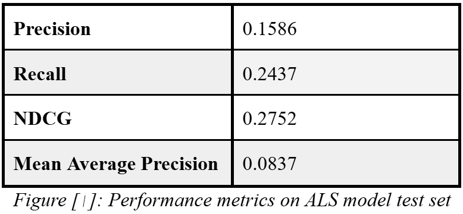

User Segmentation & Implicit Feedback
Movie Twins & Recommendation Model
Project Description
This project develops a two-part system for user segmentation and personalized movie recommendations using the MovieLens dataset, which contains over 33 million ratings from 330,000 users. The system was built on NYU's Dataproc cluster using the Hadoop Distributed File System (HDFS).
The first part of the project focuses on Customer Segmentation to identify "movie twins"—pairs of users with highly similar viewing tastes. This was achieved by applying the MinHash LSH (Locality Sensitive Hashing) algorithm to find users with a high Jaccard similarity in their sets of "liked" movies (defined as those rated 3.0 or higher).
The second part involves building a Movie Recommendation engine. This component uses an Alternating Least Squares (ALS) model configured for implicit feedback, which combines both movie ratings and user-applied tags to generate personalized recommendations. The performance of this personalized ALS model was benchmarked against a non-personalized Popularity Baseline model that recommends the most popular movies to all users.
Results
The project yielded successful outcomes in both user segmentation and movie recommendation, demonstrating the effectiveness of the chosen models.
Customer Segmentation:
- The MinHash LSH model successfully identified 100 pairs of "movie twins" with Jaccard similarity scores of 90% or higher. Many of the top pairs had a perfect Jaccard similarity of 1.0, indicating identical sets of liked movies.
- To validate the quality of these pairings, the average Pearson correlation of movie ratings for the identified "twin" pairs was calculated and compared to that of random user pairs.
- The "movie twin" pairs achieved an average Pearson correlation of 0.3123.
- The random baseline pairs had an average Pearson correlation of 0.2214.
- This higher correlation confirms that the MinHash LSH approach effectively identifies users with genuinely similar rating behaviors.
Movie Recommendation:
- The personalized ALS model significantly outperformed the Popularity Baseline model across all evaluation metrics on the test set. Due to its "cold start" strategy, the ALS model made predictions for a smaller subset of users (23,355) who were present in the training data.
- The results clearly show the value of personalization for users known to the model.